Given a piece of text produced by a large language model, can we tell which model produced it?
We frame this as supervised multi-class text classification. Each example is a triple
(LLM_name, LLM_input, LLM_output); the label is the model family
(5 classes: Claude, GPT, Google, Llama, Mistral). Depending on the research question the classifier sees
the response (LLM_output), the prompt (LLM_input) or both.
We predict the family rather than the exact version (e.g. gpt-4-0613) because versions of
the same family share training recipes and style, and because the per-version counts are small and very
unbalanced.
We report accuracy and macro-F1 (the unweighted mean of the per-class F1 scores). Classes are balanced, so the two are nearly identical; chance level is 0.20 for both. Neural results are the mean ± standard deviation over 3 random seeds.
We use lmarena-ai/arena-human-preference-55k, a dataset publicly released on Hugging Face
by the LMSYS / LMArena team (Chatbot Arena). On the Arena website a user types a prompt, two
anonymous models answer it side by side, and the user votes for the better answer. Each of the 57,477 rows
contains the prompt, the two model names and the two responses. This source suits the project well:
(i) the responses are real chatbot outputs, not text we wrote; (ii) the prompts are real user prompts across
many topics; (iii) it covers more than 60 models from all the major families; and (iv) because the
same prompt is answered by two different models, it is a controlled setting for RQ2. The data is public
and was released for research; we use only the prompt/response text and model names (no user identifiers
are included in the dataset).
src/prepare_data.py)gpt-* → GPT,
claude-* → Claude, llama-2-* → Llama (Code Llama is excluded),
mistral-*/mixtral-* → Mistral, gemini-*/palm-* → Google.
All other models (Vicuna, Yi, Qwen, …) are discarded.| Family | Model versions included (count) | Total |
|---|---|---|
| Claude | claude-2.1 (1388), claude-instant-1 (1022), claude-1 (992), claude-2.0 (598) | 4000 |
| GPT | gpt-3.5-turbo-0613/1106/0314/0125 (1654), gpt-4-1106-preview (909), gpt-4-0613 (796), gpt-4-0314 (498), gpt-4-0125-preview (143) | 4000 |
| palm-2 (1714), gemini-pro-dev-api (1195), gemini-pro (1091) | 4000 | |
| Llama | llama-2-70b-chat (1776), llama-2-13b-chat (1317), llama-2-7b-chat (907) | 4000 |
| Mistral | mixtral-8x7b-instruct (1686), mistral-medium (1537), mistral-7b-instruct (+v0.2) (777) | 4000 |
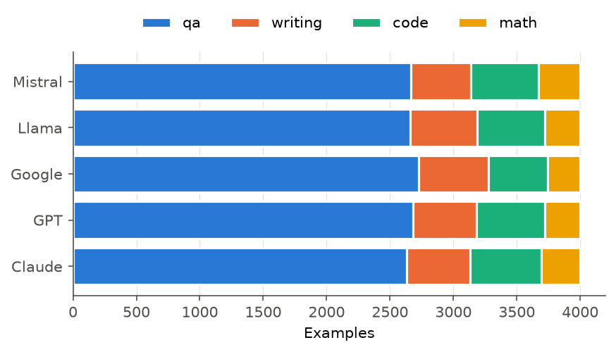
Things to keep in mind about the data. (a) A family label mixes several versions and sizes (e.g. GPT-3.5 and GPT-4), which makes the task harder and more realistic. (b) All responses date from 2023 – early 2024; newer models are not included. (c) Explicit self-identification is almost absent: fewer than 0.5% of responses in any family mention "OpenAI", "Anthropic", "Claude", "GPT", "Google", "Llama" or "Mistral" (we measured this), most likely because Arena filters out battles where a model reveals its name. So the classifiers cannot simply look for "As a model trained by OpenAI".
src/common.py)We use a simple regular-expression tokenizer, \n | \w+ | [^\w\s], that keeps case,
punctuation and line breaks (a newline becomes the token <nl>). This is deliberate:
markdown symbols (**, #, -, 1.) and layout are part of a
model's style, and a typical NLP pre-processing step (lower-casing, removing punctuation) would throw them away
(RQ4 measures exactly how much that costs). The vocabulary is the 30,000 most frequent training tokens with frequency ≥ 2;
anything else maps to <unk>. Sequences are truncated to 384 response tokens (the median response is
≈150 words) and 128 prompt tokens. For the "input + output" view the model reads
prompt[:128] <sep> response[:384].
A Kim-style (2014) text CNN. Token ids → 128-dimensional embeddings (trained from scratch, dropout 0.2)
→ three parallel 1-D convolutions with kernel widths 3, 4 and 5 (128 filters each, ReLU) → global max-pooling over
time (padding positions are masked out) → concatenation (384 features) → dropout 0.5 → linear layer with
5 outputs. Each filter is effectively a learned detector for a 3-, 4- or 5-token pattern such as
"Sure ! Here" or "<nl> - **", and max-pooling asks "does this pattern occur anywhere in the response?".
Parameters: ≈4.0M (3.8M of them in the embedding table).
Embeddings (128-d) → 2-layer bidirectional LSTM with 128 hidden units per direction (dropout 0.3 between layers) → for every position the forward and backward states are concatenated (256-d) → the sequence is summarised by masked mean-pooling and max-pooling (512-d) → dropout → linear layer. Pooling over all time steps worked better in early tests than only using the last hidden state, because the evidence (e.g. a closing "Let me know if…") can be anywhere in a long response.
Implementation note. PyTorch's standard way of handling variable-length sequences
(pack_padded_sequence) was ≈8× slower on the Apple-silicon GPU we used (222 s per epoch). We therefore wrote
the bidirectional LSTM ourselves: the backward LSTM reads each sequence reversed within its true length
(padding stays at the end), and its outputs are reversed back. We checked numerically that this gives the same outputs as
PyTorch's packed bidirectional LSTM (max difference 4·10-8). Combined with length-bucketed batches, an epoch takes ≈27 s.
results/tuning.txt). The first CNN applied
dropout 0.5 to the embeddings and stopped after 10 epochs; it learned slowly and erratically (validation F1 0.55).
Reducing embedding dropout to 0.2 and allowing 15 epochs raised validation F1 to 0.63; a larger learning rate (2·10-3)
was worse (0.58). The BiLSTM reached its best validation F1 (0.67) around epoch 9–13 while training loss kept falling,
which is the over-fitting point that early stopping is there to catch (Figure 4).To judge whether the neural models are good, we also train a non-neural baseline: TF-IDF over word unigrams and bigrams (case and punctuation kept, 100k features, sub-linear tf) + multinomial logistic regression (C = 5). It is deterministic, so it has no standard deviation.
Yes, about two times out of three. Using only the response text:
| Model (output only) | Accuracy | Macro-F1 | Best epoch (3 seeds) |
|---|---|---|---|
| Chance | 0.200 | 0.200 | – |
| CNN | 0.647 ± 0.006 | 0.645 ± 0.005 | 14, 11, 9* |
| BiLSTM | 0.667 ± 0.007 | 0.666 ± 0.009 | 7, 10, 9 |
| TF-IDF + LogReg (reference) | 0.670 | 0.667 | – |
The BiLSTM is 2 points better than the CNN, and the difference is larger than the seed-to-seed spread. The LSTM reads the whole sequence and can combine evidence from the opening, the layout and the closing of a response, while the CNN only reports whether short local patterns occur. Interestingly, the simple TF-IDF model is as good as the BiLSTM: with 14k training examples and embeddings learned from scratch, the neural models have no advantage from pre-trained language knowledge, and much of the signal is in specific word pairs (see RQ4).
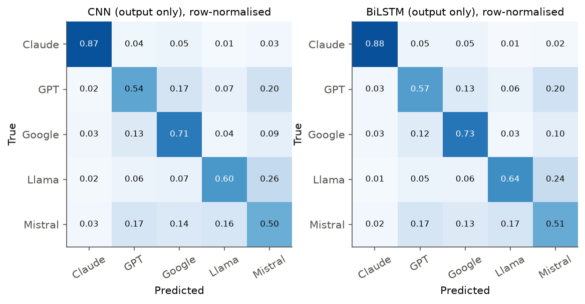
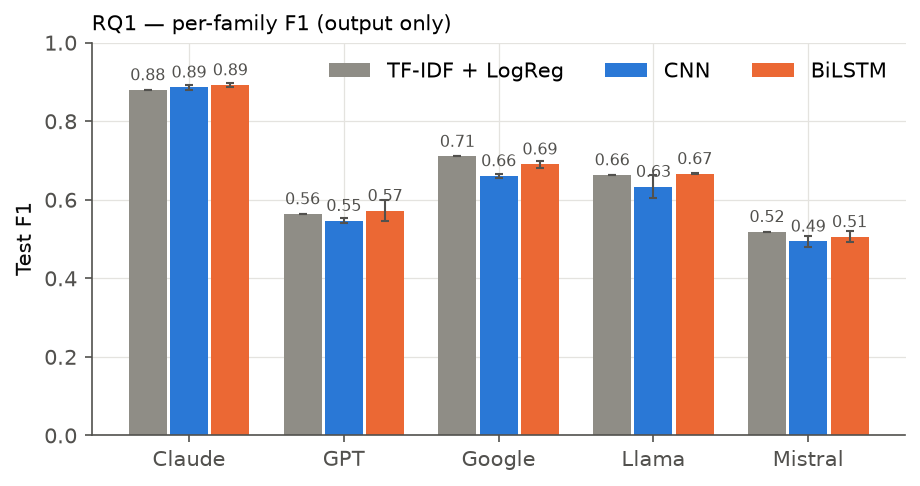
Which families get confused? Claude is recognised 87–88% of the time and rarely mistaken for anything else. The main confusions are Llama → Mistral (24–26% of Llama responses) and GPT ↔ Mistral (≈20%). Mistral's style sits "between" the others: its average length, list use and lexical diversity are all close to the overall average (RQ4), so it has few unique cues and acts as a catch-all class, which explains its low F1. One possible reason is that open instruction-tuned models are often trained on data written by other chat models, but our data cannot confirm this.
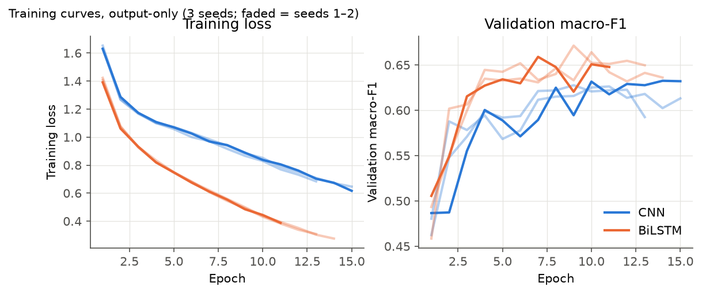
| Input given to the classifier | TF-IDF + LogReg | CNN | BiLSTM |
|---|---|---|---|
| Input only (prompt) | 0.218 | 0.200 ± 0.014 | 0.214 ± 0.008 |
| Output only (response) | 0.667 | 0.645 ± 0.005 | 0.666 ± 0.009 |
| Input + Output | 0.646 | 0.630 ± 0.015 | 0.641 ± 0.005 |
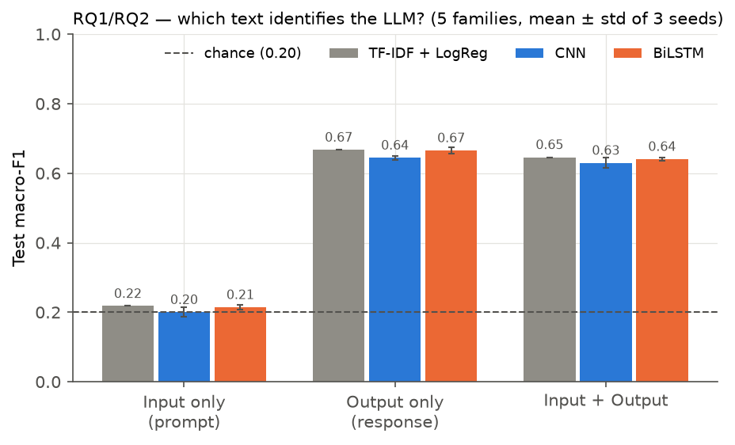
(i) Can the LLM be predicted from the prompt alone? No. All three classifiers are at chance level (0.20–0.22). This is what the data-collection process predicts. In Chatbot Arena, models are assigned to a prompt at random, and each prompt is answered by two models. For the 720 test rows (18%) whose battle partner is also in the test set, a prompt-only classifier necessarily outputs the same label for both and can be right at most half the time; it is actually right 20.7% of the time. The prompt population is also the same for every family: median prompt length is 14–15 words for all five, and the task mix differs by at most 2.5 points (Figure 1). The "most predictive prompt words" the TF-IDF model learns are noise words (goats, pokemon, terraform, Ashley) — memorised training prompts that do not generalise.
(ii) Does including the input improve classification? No — it slightly hurts (−1.5 to −2.5 F1 points for all three models). The prompt adds tokens that contain no information about the author, so the models have more chances to fit noise, and (for the neural models) the prompt uses up part of the input length.
(iii) When could input-only work "surprisingly well"? Only when the prompt and the label are linked by how the data was collected, not by the models. Examples: each model was queried with its own set of prompts (e.g. GPT on coding datasets, Claude on creative writing); models were used during different time periods so prompts mention different events; or one model was only used in one language or one application. Then a prompt-only classifier learns "who was asked this kind of question", which is a data-collection leak, not an LLM fingerprint. Our result (chance level) is evidence that our dataset is free from this leak, so the output-only scores in RQ1 reflect the models' actual writing.
We train on some task types and test on a task type the model never saw: Setting A: train on code + math + QA, test on writing; Setting B: train on general QA only, test on code. For each setting we compare three numbers: in-domain test F1 (unseen prompts of the training task types), the score on the target task of the RQ1 model that did see that task type during training, and the cross-task score.
| A: → writing | B: QA → code | |||||
|---|---|---|---|---|---|---|
| Model | in-domain | seen | unseen | in-domain | seen | unseen |
| TF-IDF + LogReg | 0.658 | 0.664 | 0.601 | 0.667 | 0.603 | 0.536 |
| CNN | 0.645 ± .002 | 0.609 | 0.559 ± .013 | 0.648 ± .004 | 0.651 | 0.564 ± .018 |
| BiLSTM | 0.659 ± .003 | 0.620 | 0.596 ± .011 | 0.652 ± .007 | 0.683 | 0.580 ± .007 |
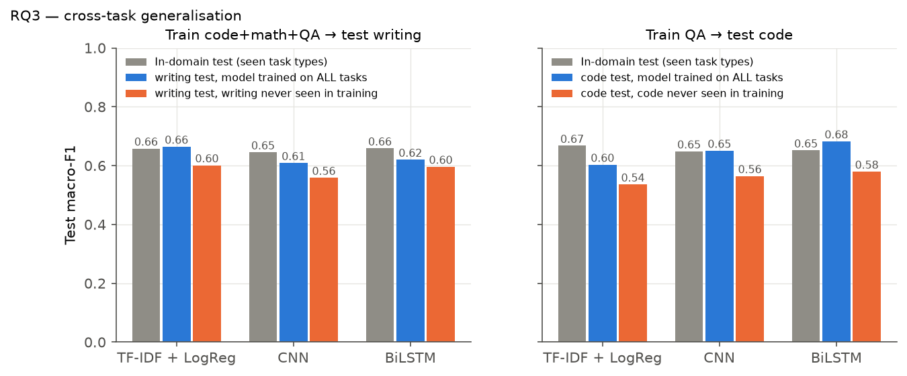
(i) Does performance drop on unseen tasks? Yes, but moderately. F1 drops by 6–9 points relative to in-domain and by 2–10 points relative to a model that saw the task type. All scores stay at ≈3× chance, so most of the fingerprint transfers. The drop is larger for QA → code than for → writing: code answers are dominated by code blocks whose content is dictated by the problem, so the style cues learned from prose are partly missing, while writing tasks still contain the model's usual prose. The BiLSTM transfers best in both settings; TF-IDF suffers most on code (its features are specific word pairs, which change completely between topics).
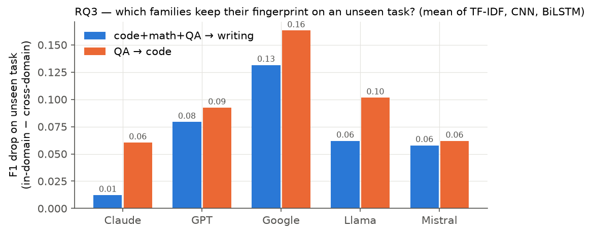
(ii) Are some models more consistently identifiable? Yes. Claude barely changes (drop 0.01 on writing, 0.06 on code; cross-task F1 0.76–0.88) — its habits (an introduction line ending in a colon, bullet lists, "In summary", closing offers) show up whatever the task. Google is the least consistent (drop 0.13 and 0.16): its most typical cue, heavy bold markdown, depends on the type of answer (structured explanations) and partly disappears in poems, stories and code.
(iii) General fingerprint or task-specific patterns? Both. A general fingerprint clearly exists (60% accuracy on a never-seen task type). But a part of what the classifiers learn is task-specific: how a family formats a certain kind of answer. A classifier meant to be used in practice should therefore be trained on a mix of tasks.
We answer "why" with four complementary analyses (src/rq4.py).
(a) Measurable style differences. We computed 29 interpretable features per response in five groups: length (words, sentences, average sentence/word length), lexical (type–token ratio on the first 100 words, hapax ratio, rates of "I" and "you", upper-case and digit ratios), formatting (lines, paragraphs, bullet and numbered lines, markdown headers, bold spans, code blocks, first line ending in a colon), punctuation (rates of , ! ? : ( and emoji) and phrasing (starts with "Sure/Certainly/Of course", apology or refusal, mentions being an AI, ends with an offer such as "let me know").
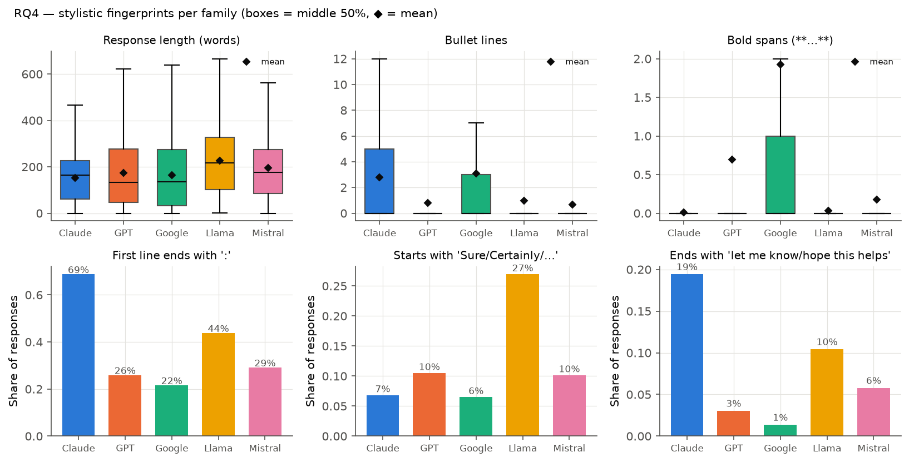
(b) How much can style alone do? A gradient-boosted tree classifier that sees only the 29 numbers — no words at all — reaches 0.59 macro-F1 (accuracy 0.60), i.e. 89% of the CNN's score. Trained on one feature group at a time, formatting is the strongest group (0.45), followed by lexical (0.36), punctuation (0.34), length (0.34) and phrasing (0.24). Permutation importance (how much F1 drops when one feature is shuffled) ranks: colon intro (0.078), number of paragraphs (0.058), bold spans (0.050), hapax ratio (0.034), bullet lines (0.031), word count (0.028), numbered lines, sentence length, "Sure"-style openings and first-person rate.
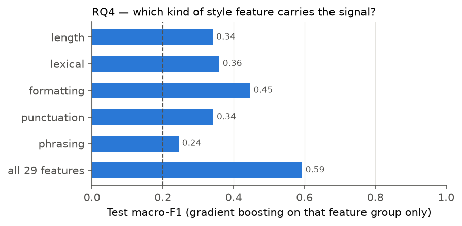
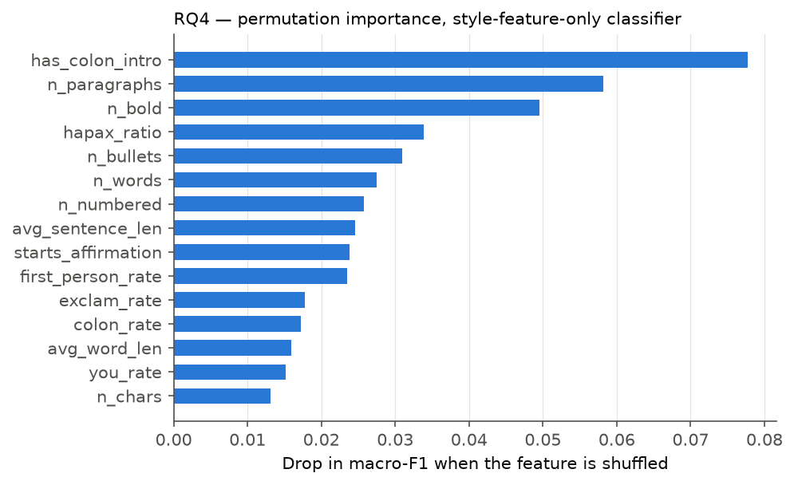
(c) What words does a classifier use? The largest TF-IDF logistic-regression weights per family are:
| Family | Most indicative n-grams (response text) |
|---|---|
| Claude | Here is, Here are, •, : -, So, in summary, Okay ,, I do |
| GPT | Remember, Certainly !, As an, various, assist, m sorry, Please note, * : |
* * (bold), : *, . *, It is, be used, a number | |
| Llama | Sure !, ! Here, So ,, just an, m just (an AI), such as, : 1 |
| Mistral | Note :, note that, \ * (escaped markdown), any questions, improve |
(d) Ablations: remove one kind of signal and retrain. We transform every response (train, validation and test) and retrain the CNN (3 seeds) and the BiLSTM (1 seed, for time reasons):
<w>; this removes topic while keeping style.| Training/test text | CNN (3 seeds) | Δ | BiLSTM (1 seed) | Δ |
|---|---|---|---|---|
| Original | 0.647 ± .009 | – | 0.649 | – |
| Content words masked | 0.638 ± .001 | −0.01 | 0.659 | +0.01 |
| No markdown / layout | 0.571 ± .004 | −0.08 | 0.586 | −0.06 |
| First 50 tokens only | 0.558 ± .001 | −0.09 | 0.579 | −0.07 |
| Words only (no punctuation/case/layout) | 0.530 ± .016 | −0.12 | 0.545 | −0.10 |
| Word order shuffled | 0.501 ± .012 | −0.15 | 0.542 | −0.11 |
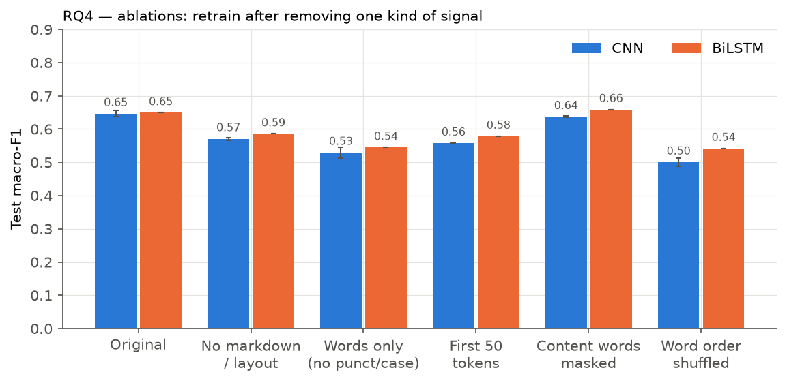
The results are very clear:
<w> leaves the
scores unchanged (CNN −0.01, BiLSTM +0.01). The classifiers recognise how something is written, not what it is about,
which is also why prompts (RQ2) do not help.Answers to the RQ4 questions. (i) The classifiers use formatting conventions (markdown, bullets, colons, paragraphing), fixed opening and closing phrases, and function-word habits much more than topic words. (ii) The signals are both structural and linguistic: formatting alone is the strongest single group, but no single group comes close to the full set, and the words-only model still works well above chance. (iii) Yes: removing formatting (−6 to −8 points), punctuation/case (a further −4), length (−7 to −9) or word order (−11 to −15) all reduce performance substantially, whereas removing topic words does not reduce it at all. LLM fingerprints are stylistic.
All code, the processed dataset, per-run results (JSON), training logs and figures are in the repository; run_all.sh
reproduces every number in this report. As allowed by the course policy, we used an AI assistant (Claude) to help write and debug code,
plan experiments and draft text. We ran all experiments ourselves and checked the results; the team is responsible for and able to explain
all of the submitted work.